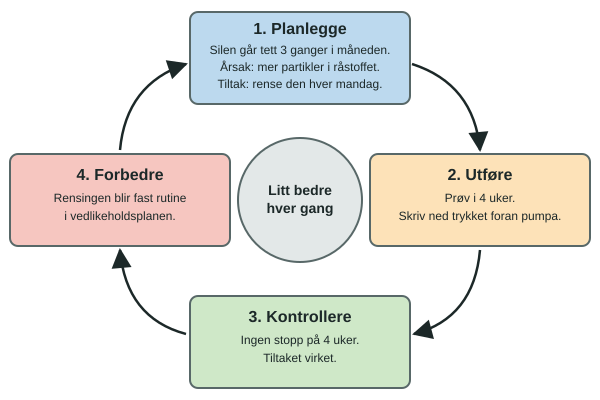

Kontinuerlig forbedring og vaktoverlevering
Et godt anlegg blir litt bedre hele tiden, fordi alle melder fra om det de ser og lærer av det som skjer. Og fordi anlegget går døgnet rundt, må det de vet, gå videre fra ett skift til det neste. Denne siden handler om begge deler.
Kontinuerlig forbedring
Kontinuerlig forbedring betyr at bedriften hele tiden leter etter små ting som kan gjøres bedre, og at arbeidet aldri blir ferdig. I stedet for å vente på én stor endring gjør man mange små forbedringer, én etter én. Til sammen blir det mye.
Forbedringene kommer fra mange steder: avviksmeldinger, feilsøking, nøkkeltall som viser at noe går feil vei, og forslag fra dem som jobber i anlegget hver dag.
Forbedringssirkelen
Forbedringsarbeid følger ofte fire steg: planlegge, utføre, kontrollere og forbedre. Det er den samme sirkelen som brukes i HMS-arbeidet, se Internkontroll. Figuren viser hvordan den kan brukes på silen som gikk tett på siden om avvik og feilsøking.

- Planlegge: Beskriv problemet med tall, finn årsaken og bestem et tiltak. Bestem også hvordan du skal se om tiltaket virker.
- Utføre: Prøv tiltaket, gjerne i liten skala eller en begrenset tid først. Skriv ned hva som skjer.
- Kontrollere: Sammenlign med hvordan det var før. Ble det bedre? Ble noe annet verre?
- Forbedre: Virket tiltaket, blir det en fast del av rutinene og prosedyrene. Virket det ikke, prøver du noe annet.
Det siste steget er viktig. En forbedring som ikke blir skrevet inn i prosedyrene, blir lett glemt når nye folk kommer.
Forbedringsforslag
De fleste bedrifter har et system der alle kan sende inn et forbedringsforslag. Et godt forslag beskriver kort hva problemet er, hvor det er, og hva du foreslår. Det trenger ikke være stort. Et skilt som mangler, en ventil som er vanskelig å nå, eller en prosedyre som er uklar, er gode forslag.
Forslagene blir vurdert, og større endringer går gjennom endringsstyring, slik det står på siden om optimalisering. Den som sendte forslaget, skal få svar på hva som skjer med det.
Vaktoverlevering
Når ett skift slutter og det neste begynner, skal alt som er viktig, gå videre. Dette kalles vaktoverlevering eller skiftoverlevering. Den som går av, gir den som kommer på, all viktig informasjon om anlegget.
Vaktoverleveringen er en sikkerhetsbarriere. Mange alvorlige ulykker har skjedd fordi informasjon ble borte mellom to skift. På Piper Alpha i Nordsjøen i 1988 startet nattskiftet en pumpe uten å vite at sikkerhetsventilen på den var fjernet for vedlikehold. Les mer i Storulykker.
Dette skal med
- Status: Hvordan går anlegget? Hva er produksjonen, og er prosessen stabil?
- Avvik og alarmer: Hva har skjedd på skiftet, og hva ble gjort?
- Utstyr ute av drift: Hva er stoppet, sikret med lås og merk eller under vedlikehold? Hvilke arbeidstillatelser er åpne?
- Endringer: Er settpunkter, utstyr eller driftsmåte endret?
- Prøver: Er det prøvesvar som mangler, eller som er utenfor spesifikasjonen?
- Oppfølging: Hva må neste skift følge med på eller gjøre?
Slik gjør du det
- Både skriftlig og muntlig: Det viktigste står i driftsloggen, men gå også gjennom det sammen, helst foran skjermene i kontrollrommet.
- Den som tar over, spør: Spør til du har forstått. Gjenta det viktigste med egne ord.
- Ikke gå før det er gjort: Den som går av, har ansvaret til overleveringen er ferdig.
Dette skriver to operatører i driftsloggen etter feilsøkingen med silen som gikk tett.
Dårlig: «Alt ok. Litt bråk fra pumpa i går.»
God: «Kl. 10.15: Pumpe A ved buffertanken ga for lite på grunn av delvis tett sil. Startet reservepumpe B, som går normalt. Pumpe A er stoppet og sikret med lås og merk for rensing av silen. Ikke start pumpe A. Arbeidsordre er sendt til vedlikehold. Nivået i buffertanken er tilbake på 50 %. Følg med på trykket foran pumpe B. Avviksmelding er skrevet.»
Hvorfor er den gode bedre? Den sier hva som skjedde og når, hva som er gjort, hvilket utstyr som ikke må startes, og hva neste skift skal følge med på. Den som leser den, trenger ikke gjette.
- Start aldri utstyr før du kjenner statusen. Sjekk loggen, arbeidstillatelser og lås og merk først. Er du i tvil, spør.
- Viktige beskjeder skal stå skriftlig. En muntlig beskjed kan bli glemt eller misforstått.
- Overlever ikke i farten. Er det mye som skjer i anlegget, må overleveringen ta lengre tid, ikke kortere.
Test deg selv
1. Hva betyr kontinuerlig forbedring?
- At anlegget aldri stopper
- At bedriften hele tiden leter etter små ting som kan gjøres bedre
- At alle prosedyrer skrives om hvert år
Kontinuerlig forbedring er mange små forbedringer, én etter én, i stedet for å vente på én stor endring. Arbeidet blir aldri ferdig.
2. Hva er riktig rekkefølge i forbedringssirkelen?
- Utføre, planlegge, forbedre, kontrollere
- Planlegge, utføre, kontrollere, forbedre
- Kontrollere, utføre, planlegge, forbedre
Først planlegger du tiltaket, så prøver du det, så sjekker du om det virket, og til slutt gjør du det til fast rutine eller prøver noe annet.
3. Et tiltak har virket godt i fire uker. Hva er det viktigste som gjenstår?
- Å slutte med tiltaket, siden problemet er borte
- Å skrive tiltaket inn i rutinene og prosedyrene
- Å prøve et annet tiltak
En forbedring som ikke blir skrevet inn i rutinene, blir lett glemt. Da kommer problemet tilbake.
4. Hvorfor kalles vaktoverleveringen en sikkerhetsbarriere?
- Fordi det står en vakt ved porten
- Fordi ulykker kan skje når neste skift ikke vet om viktig status, for eksempel utstyr som ikke må startes
- Fordi den er pålagt i arbeidsmiljøloven
Hvis informasjon blir borte mellom to skift, kan neste skift gjøre noe farlig uten å vite det. Piper Alpha-ulykken er et kjent eksempel.
5. Hvilken loggføring er best?
- «Pumpa har vært litt rar. Se på den.»
- «Alt ok.»
- «Pumpe A stoppet kl. 10.15 og er sikret med lås og merk. Ikke start den. Pumpe B går normalt.»
En god logg sier hva som skjedde og når, hva som er gjort, og hva neste skift må vite. Da trenger ingen å gjette.
Ordliste
| Begrep | Forklaring | Engelsk |
|---|---|---|
| kontinuerlig forbedring | En arbeidsmåte der bedriften hele tiden gjør mange små forbedringer, én etter én, i stedet for å vente på én stor endring. | continuous improvement |
| forbedringssirkelen | Fire steg som gjentas i forbedringsarbeid: planlegge, utføre, kontrollere og forbedre. | PDCA cycle (plan–do–check–act) |
| forbedringsforslag | Et forslag fra en ansatt om noe som kan gjøres bedre, sendt inn slik at det kan vurderes og følges opp. | improvement suggestion |
| vaktoverlevering | At den som går av skiftet, gir den som kommer på, all viktig informasjon om anlegget. | shift handover |
| driftslogg | En logg, på papir eller i et dataprogram, der operatørene skriver ned hva som har skjedd i anlegget og hva de har gjort, skift for skift. | operations log, shift log |
Les mer
- Optimalisering: forrige side.
- Internkontroll: den samme sirkelen i HMS-arbeidet.
- Storulykker: Piper Alpha og skiftoverleveringen.
- Lås og merk og lukkede rom: sikring av utstyr som ikke skal startes.
Om kildene: Teksten, eksemplene og figurene på denne siden er laget for dette nettstedet. Siden bygger på undervisningsopplegg i kjemiprosess- og laboratoriefag ved Sauda vgs, som er utarbeidet med utgangspunkt i blant annet Kjemien stemmer, Laboranten og åpne nettkilder.